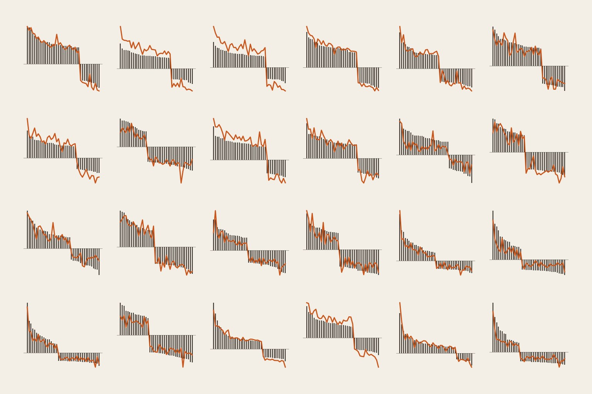
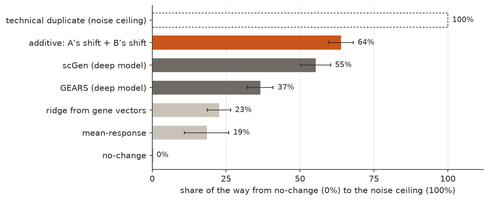
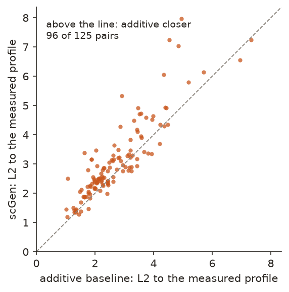

← Research·Experiments·
Adding two single-gene effects beats deep models at predicting double-gene perturbations
Switch on two genes in a cell at once: what happens to the other genes? On a public screen of 91,205 cells, the one-line rule “add the two single-gene effects” came closer to the measured answer than two published deep-learning models, scGen and GEARS. This note reproduces that published result, and adds a noise ceiling that shows how much room any method had left.

Summary: the short answer and the key results
In short
Do deep-learning models predict what two genetic perturbations do together better than adding up what each does alone?
Not on this benchmark. In Norman et al.’s 2019 screen, K562 leukaemia cells had one or two genes switched on by CRISPR activation, and each cell’s expression of 5,045 genes was read. Half of the 131 gene pairs were held out, five times over, and predictions were scored on the 1,000 most expressed genes. The additive rule (gene A’s change plus gene B’s change) covered 63.9% [59.5, 68.0] of the distance from “nothing happens” (0%) to the limit set by measurement noise (100%). scGen, a deep generative model, covered 55.3% [50.3, 60.4] and was further from the truth than additive on 96 of 125 pairs. GEARS, a graph neural network, covered 36.6% [32.2, 40.9]. Additive had the lowest error in all five splits. This reproduces Ahlmann-Eltze, Huber and Anders (Nature Methods 2025).
Key results
| What we tested | Result (125 held-out pairs) | Compared with |
|---|---|---|
| Does adding two single-gene effects predict the pair? | Yes, best of six methods: 63.9% of the way to the noise ceiling [59.5, 68.0] | scGen 55.3%, GEARS 36.6%, ridge 22.7%, mean-response 18.5% |
| Does the best deep model beat additive? | No: scGen’s error is higher by +0.390 L2 per pair [+0.283, +0.500]; it is closer on 29 of 125 pairs | GEARS: +1.248 [+1.080, +1.414], closer on 12 |
| Is one lucky split behind the order? | No: additive has the lowest mean error in 5 of 5 splits | scGen second in every split |
| Is the noise ceiling right? | Yes: measured 1.042 L2, the sampling-error formula predicts 1.035 | Half the cells against the other half reads 2.084, which would have inflated additive to 82.7% |
01Introduction
Switch on KLF1, a gene that sets up red-blood-cell identity, in a leukaemia cell, and the haemoglobin gene HBZ rises by 1.73 on a log scale. Switch on BAK1, a gene involved in cell death, and HBZ barely moves (+0.05). Switch on both, and HBZ rises by 1.67: almost exactly the sum. For most gene pairs in this screen the sum is a good guess, and that is why it is hard to beat.
What is known. Predicting what a genetic perturbation does to a cell is a central task for “virtual cell” models in drug discovery: a model that could predict the effect of switching genes on or off would let a lab try many combinations on a computer before running a few in a dish. Deep models such as scGen and GEARS were built for this, and Norman et al.’s 2019 screen is the standard benchmark for pairs. Ahlmann-Eltze, Huber and Anders (Nature Methods 2025) showed that the deep models they tested did not beat simple baselines, including adding the two single-gene effects.
What is missing. Raw error numbers do not say how much room was left. A model with an error of 3.1 sounds worse than one with 2.7, but if measurement noise alone gives 2.5, both are close to the limit; if it gives 0.5, neither is.
On the standard pairs benchmark, do deep models predict two-gene perturbations better than adding the single-gene effects, and how much of the achievable range does each method cover?
What this note does. It reruns the comparison end to end through one scoring path, with a noise ceiling measured from the data. Its contributions:
- A reproduction: additive beats scGen and GEARS on held-out pairs, in each of five splits.
- A calibrated scale: every method as a share of the distance from “nothing happens” to measurement noise, which shows how much room is left (36%).
- Code that reruns every number on a laptop CPU in about a minute, from the deep models’ saved predictions.
What would count as an answer. Set before scoring:
- Every method is scored on the same held-out pairs, the same genes, the same metric and the same intervals.
- A deep model “beats additive” only if its per-pair advantage has a 95% interval that excludes zero.
- The noise ceiling must match the error the sampling formula predicts, or no normalised number is quoted.
- The order must hold across splits, not only on the pooled average.
02Setup
2.1 Biology 101, for software engineers
No biology is needed to follow this note, but a little helps. Here is the minimum, with a programming analogy for each idea.
- A cell is a running program. Every cell in your body holds the same code but runs different parts of it. A liver cell and a neuron have the same DNA.
- DNA is the source code. It is written in a 4-letter alphabet (A, C, G, T), about 3 billion letters long, and every cell keeps a copy in its nucleus. A gene is a function in that code: a stretch of DNA that encodes one product, usually a protein. Humans have about 20,000. Much of the rest is regulatory switches, the config that decides when each gene runs.
- DNA → RNA → protein. To use a gene, the cell copies just that gene, not the whole DNA, into RNA: a disposable working copy, made as many times as needed, like loading code into memory. Ribosomes then translate the RNA into a chain of amino acids that folds into a 3-D protein. The shape decides the job. Some proteins are enzymes (they speed up chemical reactions), some are signals (hormones, receptors), some are structure. The protein is the enzyme or the signal; it does not turn into one later. (A few genes stop at RNA, and the RNA itself does the job.) Biologists call this flow the central dogma: source, loaded copy, running process.
- Expression is a live call count. A gene’s expression is how much of its RNA the cell is making right now. The expression profile is the vector of those numbers, one per gene, about 20,000 long. It is what “cell state” means. This dataset keeps 5,045 genes per cell, on a log scale.
- Genes call each other. Genes regulate other genes, like a dependency graph or a service mesh, so changing one gene ripples through to many others. That ripple is what the models in this note try to predict.
- A perturbation is a deliberate change, to see what happens. A knockout deletes a gene (CRISPR cuts the DNA). CRISPRi turns a gene down, like a throttle. CRISPRa turns a gene up without cutting, like a dimmer: a disabled Cas9 protein that cannot cut is guided to the start of the gene and switches it on harder. This dataset uses CRISPRa. CRISPR itself is grep plus a payload: a guide of about 20 letters finds its match in the 3-billion-letter genome and acts there.
- Perturb-seq is a massive barcoded A/B test. Single-cell RNA sequencing reads the expression vector of thousands of individual cells. In Perturb-seq, each cell gets a random perturbation plus a barcode naming it, and afterwards the cells are grouped by barcode. Here each cell got guides for one gene, two genes, or none (the control).
- Pseudo-bulk is averaging noisy logs. One cell’s readout is noisy, so all the cells with the same barcode are averaged into one profile: 237 profiles from 91,205 cells (the control from 7,353 cells, a typical condition from 295). “Profile” below always means this average, and a shift is a profile minus the control profile: how much each gene moved.
- K562 is the test environment. It is a human leukaemia cell line grown in labs since 1970: cheap, uniform and well studied, but not a real tissue. Every cell starts out genetically the same.
- Why pairs matter: genetic interactions. Most gene pairs simply add up (additive). Some show synergy, doing much more than the sum, and some show buffering, doing less. Drug combinations hunt for synergy. With about 20,000 genes there are roughly 200 million possible pairs (20,000 × 19,999 ÷ 2), far too many to test in a lab. That is why predicting pairs from singles is worth doing.
| Term | In one line |
|---|---|
| Gene | A stretch of DNA that encodes one product, usually a protein: a function in the source code |
| Expression | How much RNA of a gene a cell is making right now |
| Expression profile | The vector of every gene’s expression in a cell (or the average of many cells): the cell’s state |
| Perturbation | A deliberate change to a gene, to see what happens to the others |
| CRISPRa / CRISPRi | Turn a gene up / down without cutting the DNA; this dataset uses CRISPRa |
| Perturb-seq | Many perturbations in one dish, each cell barcoded, each cell’s expression read |
| Pseudo-bulk | The average profile of all the cells with the same perturbation |
| Cell line | A population of identical cells grown in the lab for decades (here K562) |
| Genetic interaction | When two perturbations together do more (synergy) or less (buffering) than the sum of each alone |
2.2 The additive rule on three genes
The additive prediction for a pair is the control profile plus gene A’s shift plus gene B’s shift. On the pair BAK1+KLF1 and the three genes it moves most:
| Gene | Control | BAK1 alone | KLF1 alone | Additive: sum | Measured pair |
|---|---|---|---|---|---|
| HBZ (haemoglobin) | 1.79 | +0.05 | +1.73 | +1.78 | +1.67 |
| HBG2 (haemoglobin) | 1.89 | +0.03 | +1.36 | +1.38 | +1.18 |
| TMSB10 | 2.42 | −0.10 | +1.18 | +1.08 | +1.09 |
Shifts are on the log scale of the processed data. Over all 1,000 scored genes this prediction is 1.02 from the measured profile (L2, defined below), the closest of any pair; it was chosen for that reason. Where two genes interact, for example when one switches off the other’s targets, the sum misses. Those interactions are what a model would need to learn.
2.3 Six methods
| Method | What it predicts for pair A+B | Learned from |
|---|---|---|
| no-change | The control profile: “nothing happens” | Nothing |
| mean-response | Control plus the average shift of every training condition: “everything does the same thing” | Training conditions |
| ridge | Control plus a learned map from each gene’s vector (20 PCA coordinates of its measured single shift) to a shift, summed over A and B | The 105 singles |
| additive | Control plus A’s measured shift plus B’s measured shift | The two singles |
| scGen | A variational autoencoder trained on the cells; A’s and B’s directions are added to control cells in its learned space, then decoded | All training cells, retrained per split |
| GEARS | A graph neural network over a Gene Ontology graph and a co-expression graph | Training conditions, per split |
Every method sees every single-gene perturbation. That is what lets additive work, and the deep models get the same information. scGen and GEARS were trained once per split on exactly these splits (settings in the README); their saved predictions are scored here by the same code as the baselines.
2.4 Scoring and the noise ceiling
- Splits. Following the published study: every single trains; of the 131 pairs, 66 train and 65 are held out, five times with different random seeds. 128 pairs are held out at least once. A pair held out more than once is scored as the mean over its splits.
- Genes. The 1,000 genes with the highest control expression, chosen from the control so the choice cannot depend on any prediction.
- L2 is the straight-line distance between the predicted and measured profiles over those 1,000 genes. Lower is better.
- Pearson δ is the correlation between the predicted and measured shifts across genes: does the method get the direction of each gene’s change right? It is undefined for no-change, which predicts no shift.
- The technical duplicate (noise ceiling). A profile is an average of a few hundred cells, so it carries sampling error, and a perfect method would still miss by that much. To measure it, take a random half of a pair’s cells and score their average against the average of all of them. No method can expect to do better.
- Normalised score = (no-change error − method error) ÷ (no-change error − ceiling): 0% is “nothing happens”, 100% is as good as the measurement allows.
- Intervals are 95% percentile bootstraps over held-out pairs (5,000 resamples), because a pair is the unit a claim is about.
03How the study was run
- Fetch the GEARS authors’ processed Norman file (169 MB, checked against its hash).
- Pseudo-bulk 91,205 cells into 237 profiles; fix the five splits and the 1,000 genes.
- Ceiling: one technical duplicate per held-out pair (128 pairs, 34,821 cells), checked against the formula.
- Baselines: 4 baselines × 5 splits × 65 pairs, seconds on a CPU.
- Deep models: scGen trained 5 times (about 44 minutes in all on a laptop CPU), GEARS 5 times (about 100 minutes each on a cloud GPU), each predicting its split’s held-out pairs.
- Score all six on the 125 pairs every method can predict, with intervals, paired differences and per-split means.
| Fixed before any scoring | Changed after reading results |
|---|---|
| The data file, the five splits, the 1,000 genes, the metrics, the ceiling’s definition, every model’s settings | An early draft measured the ceiling as half the cells against the other half, which is twice the true sampling error; it was fixed before any normalised number was used, and the formula check now guards it. The table was restricted to the 125 pairs GEARS can predict, so every row is scored on the same pairs |
Conditions: baselines, ceiling and scoring on an Apple-silicon laptop CPU in about a minute; scGen on the same laptop; GEARS on one NVIDIA L4 GPU on Modal, about $6.70 for the five runs. No language models, no API calls.
04Results
Four findings:
- 4.1 Additive covers 64% of the achievable range; scGen 55%, GEARS 37%.
- 4.2 scGen comes closest, and still loses on 96 of 125 pairs.
- 4.3 The order holds in every split.
- 4.4 The noise ceiling matches the sampling formula.
4.1 Additive covers 64% of the achievable range; scGen 55%, GEARS 37%
On the 125 held-out pairs every method can predict, adding the two single-gene shifts had a mean L2 of 2.697 [2.507, 2.895]: 63.9% of the way from no-change (5.623) to the noise ceiling (1.042). scGen reached 3.087 (55.3%), GEARS 3.946 (36.6%), ridge 4.584 (22.7%) and mean-response 4.775 (18.5%). Figure 1 shows the normalised scores.

| Method | Mean L2 | 95% interval | Pearson δ | Normalised |
|---|---|---|---|---|
| no-change | 5.623 | [5.224, 6.034] | n/a | 0% |
| mean-response | 4.775 | [4.436, 5.124] | 0.553 | 18.5% |
| ridge | 4.584 | [4.408, 4.768] | 0.548 | 22.7% |
| GEARS | 3.946 | [3.748, 4.147] | 0.718 | 36.6% |
| scGen | 3.087 | [2.858, 3.319] | 0.850 | 55.3% |
| additive | 2.697 | [2.507, 2.895] | 0.907 | 63.9% |
| technical duplicate (ceiling) | 1.042 | [0.966, 1.123] | n/a | 100% |
Both metrics put additive first, scGen second and GEARS third. They disagree only on ridge against mean-response, and there the per-pair difference is −0.191 L2 [−0.499, +0.105]: the interval contains zero, so the data does not separate those two. What the scale adds is the size of the remaining room: after additive, 36% of the achievable range is left for everything a model could learn about how genes interact.
4.2 scGen comes closest, and still loses on 96 of 125 pairs
Pair by pair, scGen’s error minus additive’s is +0.390 L2 on average [+0.283, +0.500]; scGen is closer on 29 of the 125 pairs. GEARS’s error is higher by +1.248 [+1.080, +1.414], and it is closer on 12. Both intervals exclude zero, so by the rule set before scoring, neither deep model beats additive. Figure 2 shows every pair.

scGen does the same arithmetic as additive in a learned space instead of gene space: it encodes cells, adds the two single-gene directions, and decodes. The pairs where it beats additive are spread across easy and hard pairs alike (Figure 2), rather than clustered where additive fails, which is where a learned interaction would show.
4.3 The order holds in every split
In each of the five splits, on that split’s 63 or 64 scorable held-out pairs, additive has the lowest mean L2 and scGen the second lowest. The pooled result does not come from one lucky split.
| Split | Pairs | no-change | mean-resp. | ridge | GEARS | scGen | additive |
|---|---|---|---|---|---|---|---|
| 1 | 64 | 5.649 | 4.793 | 4.723 | 3.955 | 3.317 | 2.682 |
| 2 | 64 | 5.635 | 4.864 | 4.626 | 3.994 | 3.007 | 2.679 |
| 3 | 63 | 5.580 | 4.596 | 4.568 | 3.833 | 3.075 | 2.666 |
| 4 | 63 | 5.865 | 4.972 | 4.489 | 4.008 | 2.939 | 2.682 |
| 5 | 64 | 5.325 | 4.584 | 4.631 | 3.963 | 2.749 | 2.451 |
4.4 The noise ceiling matches the sampling formula
The technical duplicate averages 1.042 L2 [0.966, 1.123] over the 125 pairs. The formula for the sampling error of an average of n cells, the square root of the sum over genes of each gene’s variance divided by n, predicts 1.035: a ratio of 1.007.
This checks the ruler every normalised number depends on. The tempting version, one half of the cells against the other half, compares two noisy averages instead of one with its own total, and reads twice the floor (half₁ − all = (half₁ − half₂) / 2). On these pairs it reads 2.084, and it would have put additive at 82.7% instead of 63.9%: a method would look much closer to perfect than it is.
05Compared with prior work
| Ahlmann-Eltze et al. (2025) | This note | |
|---|---|---|
| Deep models compared | Five foundation models and two other deep models, GEARS among them | scGen and GEARS |
| Single and double perturbations | Both | Doubles only, on Norman 2019 |
| Simple baselines, additive among them | ✓ | ✓ |
| A deep model beats the baselines | ✗ | ✗ |
| Measured noise ceiling, checked against the sampling formula | — | ✓ |
The published study’s verdict carries over to the two models run here. What this note adds is the ruler: a measured ceiling, so the gap is a share of the achievable range rather than a raw distance, and paired per-pair intervals beside the per-split order.
06Implications for AI in biology
A published deep model is only as good as the simplest thing it was compared with. On the standard benchmark for pairs of perturbations, the simplest serious baseline, adding the two measured effects, was not beaten by either deep model here, and it already covers about two-thirds of what the measurement allows. A new model claiming progress on this task has to beat additive pair by pair, and the useful headline is how much of the remaining 36% it closes. The same discipline applies to claims about AI in biology generally, including claims used to argue a model is capable or dangerous: a capability number without its baseline and its noise floor cannot be read.
Risk: very low. The data is a public CRISPR activation screen in an immortalised human cell line, with no pathogen sequences, individual genomes or patient data. Nothing here is generative: the methods predict expression for perturbations that were already performed and measured, and propose none. The finding is negative and methodological.
The recommendation in one sentence: report every perturbation model against the additive baseline, pair by pair, on a scale anchored at no-change and at a measured noise ceiling.
07What this does not show
- One dataset, one cell line. Norman 2019 in K562 with CRISPR activation. Knockouts, other cell types or larger screens may favour different methods.
- Pairs whose singles were measured. Additive needs both genes measured alone. Predicting a gene never perturbed is where models like GEARS are meant to help, and it is not tested here.
- Two deep models, one setting each. scGen and GEARS at standard settings (GEARS for 20 epochs). Newer single-cell foundation models were not run here; the published study tested several and found the same.
- One metric family. L2 and Pearson δ on the 1,000 most expressed genes. Metrics that weight rarely expressed or strongly changed genes could order the methods differently.
- Averages over cells. Pseudo-bulk asks about the average cell; it says nothing about how well any method predicts the spread between cells.
- 125 pairs. Intervals are over pairs; the 3 pairs GEARS cannot predict are dropped from every row.
08Reproduce it
Recompute every number and figure from the shipped results, in seconds:
experiments/perturbation-baselines/reproduce.sh --scoresRerun from the raw data: a 169 MB download into ~/.cache/steerlab/norman (or $NORMAN_DIR), then about a minute on a laptop CPU. The pseudo-bulk step pulls in anndata through uv:
experiments/perturbation-baselines/reproduce.sh --dry-run # lists every command
experiments/perturbation-baselines/reproduce.shscGen and GEARS are scored from their saved predictions in results/predictions/; the README gives their settings and hardware.
09What’s next
- Pairs with an unmeasured gene, where additive cannot run and a learned model has to carry the prediction.
- Where additive fails: the pairs furthest from the sum are the genetic interactions a model would have to learn, and the place to test whether any model does.
- Single-cell foundation models on the same splits and scale.
10Questions and answers
Do deep-learning models beat simple baselines at predicting gene perturbations?
Not on the Norman 2019 pairs benchmark. Adding the two single-gene effects covered 63.9% of the range from “nothing happens” to measurement noise; scGen covered 55.3% and GEARS 36.6%. Pair by pair, both had higher error than additive, with intervals that exclude zero.
What is the additive baseline?
For a pair of perturbed genes A and B: the control profile, plus how much each gene moved when A was perturbed alone, plus how much it moved when B was perturbed alone. It assumes the two effects do not interact.
What is a noise ceiling, and why does it matter?
It is the error a perfect prediction would still have, because the measured profile is itself an average of a few hundred noisy cells. Without it, an error of 2.7 cannot be read. With it (1.04 here), 2.7 means a method covered about two-thirds of the achievable range.
AAppendix: data
Every number comes from a file in results/; README.md describes every field.
pseudobulk_top1000.npz: the 237 average profiles on the 1,000 scored genes.splits.json: each split’s training and held-out pairs.ceiling.csv: per held-out pair, the technical duplicate, the formula’s prediction and the half-against-half version.predictions/scgen.npz,predictions/gears.npz: the deep models’ predicted profiles per pair and split.per_pair.csv,table.csv,summary.json: every score, interval and difference quoted here.
Techniques
| Design | Held-out gene pairs over five random splits (Ahlmann-Eltze, Huber and Anders, 2025) |
|---|---|
| Baselines | No-change, mean-response, ridge regression from PCA gene vectors, additive |
| Models | scGen (variational autoencoder, latent arithmetic), GEARS (graph neural network) |
| Controls | Technical-duplicate noise ceiling, checked against the sampling-error formula |
| Statistics | Percentile bootstrap over pairs (5,000 resamples); paired per-pair differences |
Tech stack
| Data | Norman et al. 2019, as processed by the GEARS authors (Harvard Dataverse DVN/Q2ZV3E, CC0) |
|---|---|
| Analysis | Python, NumPy, SciPy, anndata, matplotlib |
| Models | scGen through pertpy (JAX) on a laptop CPU; the GEARS reference implementation (PyTorch) on an NVIDIA L4 on Modal |
| Compute | About a minute on a laptop CPU for this folder; about $6.70 of GPU time for GEARS |
References
- Norman, Horlbeck, Replogle et al. “Exploring genetic interaction manifolds constructed from rich single-cell phenotypes.” Science, 2019.
- Ahlmann-Eltze, Huber and Anders. “Deep-learning-based gene perturbation effect prediction does not yet outperform simple linear baselines.” Nature Methods, 2025.
- Roohani, Huang and Leskovec. “Predicting transcriptional outcomes of novel multigene perturbations with GEARS.” Nature Biotechnology, 2024.
- Lotfollahi, Wolf and Theis. “scGen predicts single-cell perturbation responses.” Nature Methods, 2019.
Revision history
- Nov 9, 2026: Added a Biology 101 primer for readers new to biology (section 2.1).
- Nov 9, 2026: First published.
How to cite
@misc{lie2026perturbationbaselines,
author = {Albert Lie},
title = {Adding two single-gene effects beats deep models at predicting double-gene perturbations},
year = {2026},
month = nov,
url = {https://albertlieyingadrian.github.io/steerlab/experiments/perturbation-baselines/report/}
}